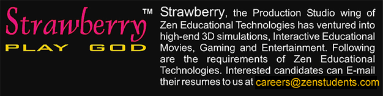

Careers
CONTENT MANAGER
Job Profile : Will be responsible for leading the entire content processes and managing the pipeline. Will coordinate with various Content Development Divisions: Authoring, editing, animation scripting and production. Must have excellent editing skills in science subjects and English and must be a good Project leader with great communication skills. 3+ years editing experience with a degree/PG in Science/Engineering.
OPERATIONS EXECUTIVE
Being truly rooted in this philosophy, we at Zen Educational Technologies settle to contribute nothing less than the very best to our customers. With relentless pursuit for excellence, a maniac obsession for quality, wildly imaginative creativity and mind boggling innovation, we always bring out top of the line block-buster magical products. Customer joy, delight and satisfaction are the true rewards we are aiming for
CREATIVE DIRECTOR/TEAM LEADER
Job Profile : The incumbent would be responsible for leading the entire studio operations (3d Digital animations, 2d Digital animation & Print Media).
- Solely responsible for the delivery of the product from client brief to packaging all in terms of creativity and in terms of time management of processes.
- Would act as the chief visualizer and content researcher.
- The director would guide the authors, script writers and artists on the techniques of hi-end visualizations and presentations. On submission of the scripts the director would do intensive and exhaustive research on the scripts delivered. And modify the scripts into soul scintillating experiences.
- Responsible for all visual process (3d, 2d animations and print).
- Guide designers on various levels to infuse high levels of creativity and cutting edge innovations.
- Solve creative and technical issues relating to all processes set within the company.
Has to train people or put together training programs for internal upgrading.
- As a great team leader, the director is expected to constantly upgrade the technical sophistication of the studio operations and inspire the designers’ team to deliver high levels of productivity, efficiency and excellence.
- Should have complete knowledge and understanding of the process of innovation and should infuse invention at every step of product development.
- Excellent skills in creative writing and mesmerizing narration are a must.
Skills required:
- Has to be highly proficient and well versed with creative processes of Animation for all media
- Has to have a Art background with a BFA/MFA or an equivalent degree in fine arts
- Should be very conversant with color, lights with traditional photographic procedures and the technicalities involved with using them in a creative process
- Should be able to work under pressure with given constraint to deliver visual products of high quality
- Should understand industry standards set at the international level
- Should have good communication skills along with good writing skills and language skills.
- Should have a track record of having delivered innovative high quality records.
- Should be a quick learner and show excellent adaptation skills as per the changing needs of the organization.
Required Qualification:
- Graduation or PG in Science/Engg. with excellent English language skills
- 5- 8 years experience in the field of digital animation and print medium.
- Should have hands-on working knowledge of 3D applications like 3D Studio Max Version 8.0 and Maya 7.0.
- Should have working knowledge of 2D animation packages like Flash MX 2004, etc.
- Have exposure to the printing and the technicalities involved with book making and page making software packages like, CorelDraw, In-design, PageMaker, etc.
- Good working knowledge of Adobe Photoshop.
- Additional knowledge of Corel Painter, Adobe Premier and knowledge of sound editing packages like Sound forge would be an added advantage.
- Should be able to put together a working pipeline with any number of software and hardware and efficiently change the pipe as and when required by the projects.
SUBJECT EXPERTS
Job Profile : Professors, Academicians and Teachers with 10+ years of Teaching Experience required for developing world class content for our Magical Blockbuster Products(Books & CDs). Candidates are expected
- to have a very high level of Expertise in their respective subject. Must also have the greatest passion to do indepth research in their field.
- Must have impeccable command over the English Language and have the ability to author, write scripts and present the content in a soul scintillating way.
- Must show astounding levels of creativity and systematically innovate at every step of the content development process.
- Must understand the psyche of the students and present the content in a way that makes learning interesting, exciting and fun and ultimately fulfil the learning objectives and enhance the inquisitiveness of the student.
Physics & Mathematics Expert
- PG in Physics or Engineering with 10 to 15 yrs teaching Experience at Class XII. Must be able to author and edit books and CD content of class X, XI, XII. PhD in physics or Mathematics and ability to prepare content for IIT JEE and other Competitive Exams would be an additional advantage
Chemistry and Biology Experts
- Qualified professors with PG in Chemistry or Biology.
Other attributes as mentioned above
Social Science and English
- PG or PhD in History. Must have the ability to author and Edit Social Science, humanities and English subjects of Class X, XI and XII.
Interested candidate can email their resume to us at careers@zenstudents.com
EXECUTIVE EDITOR
Job Profile : The incumbent would be responsible for leading the entire publication division and product development wing of Zen Educational Technologies.
- Responsible for developing high quality innovative content for Zen Books and CDs (Interactive Movies).
- Spotting talented and experience Authors, Teachers and Academicians and guiding them on various levels of quality innovation and content presentation.
- Inducing in-depth content research and exploration.
- Create high-end concepts and develop various educational tools to deliver world-class education.
- With a passion for developing insanely beautiful products, the editor should exemplify genius in his skills of editing, writing catchy introductions and presenting a deeply researched content.
- Would be totally responsible for innovation at every step of the product development.
- Should thoroughly understand a students’ psychology of various age groups right from Kindergarten to Post Graduation.
- Should lead the entire page making division of Zen Educational Technologies.
- Research and apply world-class design concepts in pagination.
- Should lead all educational expansion plans of Zen.
Required Qualification:
- M.Sc. (Physics) / Ph. D. (Physics) with excellent English language editing skills
- 5+ years experience in academics and teaching preferably at + 2 Level.
- 3+ years experience in leading the publication division team.
- Excellent track record of editing/authoring.
- Degree in fine arts / designing is preferred.
ENGLISH LANGUAGE EDITORS
Graduate/Post graduate in Science/Engineering with excellent English language editing skills/experience. Capable or editing content of Science and Maths or any other subjects upto PUC II level.
- Qualification in Management will be an added advantage.
- 3+ years of excellent editing experience.
KANNADA LANGUAGE EDITORS
Graduate / Post graduate in any Arts subject with Kannada as a main subject.
- Should have excellent editing skills of Kannada content of different subjects upto PUC II level.
- 3+ years of excellent editing experience.
- Excellent academic record
3D MODELLER – Max / Maya
- Should have worked with Max 8.0/Maya 7.0 for at least a year.
- A degree in Science – With physics, chemistry, mathematics, zoology or botany / B.E. (Mech.) with PCMB up to class XII.
Technical skills:
- Should be very adept at 3D visualization.
- Good props, product modeling skills-Organic as well as in-organic.
- Able to understand and interpret model-sheets given by client.
- Strong modeling concepts.
- Able to model, Vehicles, environment and characters as well.
- Should be able to prepare the model for the next production phase –UVW unwrap, optimization etc.
Additional Qualification:
- Good visual communication skills – Able to sketch and paint.
- Documentation skills.
- Multitasking – Should be able to work with texturing, rigging and animation.
- Cross-platform.
3D RIGGING ARTISTS and ANIMATORS – Max/Maya
- Should have worked with Max 8.0 /Maya 7.0 for at least a year, with Photoshop, Painter or equivalent.
- A degree in Science – With physics, chemistry, mathematics, zoology or botany / B.E. (Mech.) with PCMB up to class XII.
Technical skills:
- Strong color and lighting sense
- Be able to create shaders and materials mimicking, metal, glass, wood, etc.
- Should be able to create custom textures in Photoshop or any 2D package
- Understand optimization and render related issues for complex, Ray-traced and Mental ray scenes
- Should be aware of network rendering
- Should be able to make hand-drawn textures
Additional Qualification:
- Good visual communication skills – Able to sketch and paint
- Documentation skills.
- Multitasking – Should be able to work with texturing, rigging and animation.
- Cross-platform.